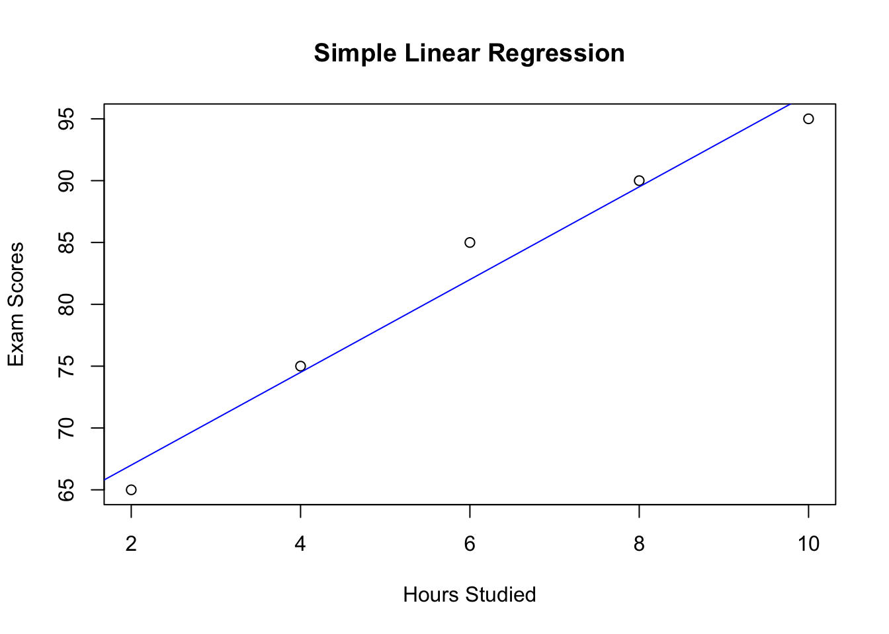

In this topic, you will learn about :
Simple Linear Regression is a statistical method used to model the relationship between two continuous variables by fitting a linear equation to the data. It helps to understand how changes in the predictor variable (independent variable) are associated with changes in the response variable (dependent variable).
Performing Simple Linear Regression:
Example: Simple Linear Regression
Suppose we have data on the number of hours studied and the corresponding exam scores, and we want to model the relationship between the two variables using simple linear regression.
# Sample data for hours studied and exam scores
hours_studied <- c(2, 4, 6, 8, 10)
exam_scores <- c(65, 75, 85, 90, 95)
# Create a data frame with the two variables
data <- data.frame(Hours_Studied = hours_studied, Exam_Scores = exam_scores)
# Perform simple linear regression
reg_model <- lm(Exam_Scores ~ Hours_Studied, data = data)
# Print the regression summary
summary(reg_model)##
## Call:
## lm(formula = Exam_Scores ~ Hours_Studied, data = data)
##
## Residuals:
## 1 2 3 4 5
## -2.0 0.5 3.0 0.5 -2.0
##
## Coefficients:
## Estimate Std. Error t value Pr(>|t|)
## (Intercept) 59.5000 2.5331 23.49 0.000169 ***
## Hours_Studied 3.7500 0.3819 9.82 0.002245 **
## ---
## Signif. codes: 0 '***' 0.001 '**' 0.01 '*' 0.05 '.' 0.1 ' ' 1
##
## Residual standard error: 2.415 on 3 degrees of freedom
## Multiple R-squared: 0.9698, Adjusted R-squared: 0.9598
## F-statistic: 96.43 on 1 and 3 DF, p-value: 0.002245Interpreting the Output:
The output of the summary() function on the regression model provides the coefficient estimates, standard errors, t-values, and p-values for the predictor variable (Hours_Studied) and the intercept term. It also provides the R-squared value, which represents the proportion of variance in the response variable (Exam_Scores) explained by the predictor variable.
The coefficient estimate for Hours_Studied indicates the change in the Exam_Scores for each unit increase in Hours_Studied.
Once the regression model is fitted, you can make predictions for new data using the predict() function.
# New data for prediction
new_data <- data.frame(Hours_Studied = c(3, 7, 9))
# Make predictions using the regression model
predictions <- predict(reg_model, newdata = new_data)
# Print the predictions
print(predictions)## 1 2 3
## 70.75 85.75 93.25You can visualize the linear regression model by plotting the regression line along with the data points.
# Plot the data points and the regression line
plot(hours_studied, exam_scores, xlab = "Hours Studied", ylab = "Exam Scores", main = "Simple Linear Regression")
abline(reg_model, col = "blue")
Summary:
Multiple Linear Regression is a statistical method used to model the relationship between a dependent variable (response variable) and two or more independent variables (predictor variables) by fitting a linear equation to the data. It helps to understand how changes in multiple predictor variables are associated with changes in the response variable.
Performing Multiple Linear Regression:
Example: Multiple Linear Regression
Suppose we have data on the number of hours studied, the number of hours slept, and the corresponding exam scores, and we want to model the relationship between the two predictor variables (Hours_Studied and Hours_Slept) and the response variable (Exam_Scores) using multiple linear regression.
# Sample data for hours studied, hours slept, and exam scores
hours_studied <- c(2, 4, 6, 8, 10)
hours_slept <- c(6, 7, 8, 9, 8)
exam_scores <- c(65, 75, 85, 90, 95)
# Create a data frame with the three variables
data <- data.frame(Hours_Studied = hours_studied, Hours_Slept = hours_slept, Exam_Scores = exam_scores)
# Perform multiple linear regression
reg_model <- lm(Exam_Scores ~ Hours_Studied + Hours_Slept, data = data)
# Print the regression summary
summary(reg_model)##
## Call:
## lm(formula = Exam_Scores ~ Hours_Studied + Hours_Slept, data = data)
##
## Residuals:
## 1 2 3 4 5
## -1.00e+00 5.00e-01 2.00e+00 -1.50e+00 -1.11e-15
##
## Coefficients:
## Estimate Std. Error t value Pr(>|t|)
## (Intercept) 45.000 9.109 4.940 0.0386 *
## Hours_Studied 3.000 0.552 5.435 0.0322 *
## Hours_Slept 2.500 1.531 1.633 0.2441
## ---
## Signif. codes: 0 '***' 0.001 '**' 0.01 '*' 0.05 '.' 0.1 ' ' 1
##
## Residual standard error: 1.936 on 2 degrees of freedom
## Multiple R-squared: 0.9871, Adjusted R-squared: 0.9741
## F-statistic: 76.33 on 2 and 2 DF, p-value: 0.01293Interpreting the Output:
The output of the summary() function on the multiple regression model provides the coefficient estimates, standard errors, t-values, and p-values for each predictor variable (Hours_Studied and Hours_Slept) and the intercept term. It also provides the R-squared value, which represents the proportion of variance in the response variable (Exam_Scores) explained by the predictor variables.
The coefficient estimates for Hours_Studied and Hours_Slept indicate the change in the Exam_Scores for each unit increase in the corresponding predictor variable while holding other variables constant.
Similarly to simple linear regression, you can make predictions for new data using the predict() function.
# New data for prediction
new_data <- data.frame(Hours_Studied = c(3, 7, 9), Hours_Slept = c(7, 8, 9))
# Make predictions using the regression model
predictions <- predict(reg_model, newdata = new_data)
# Print the predictions
print(predictions)## 1 2 3
## 71.5 86.0 94.5Summary:
Test (30% of ongoing assessment)
Topic 1 to 6